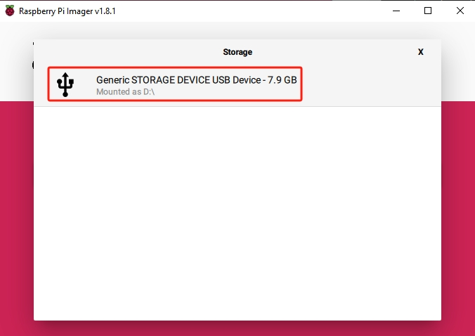
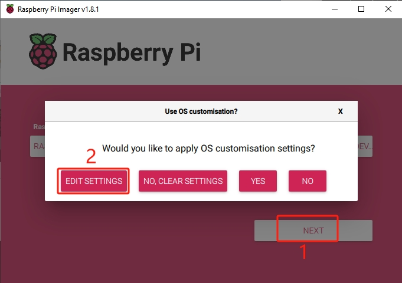
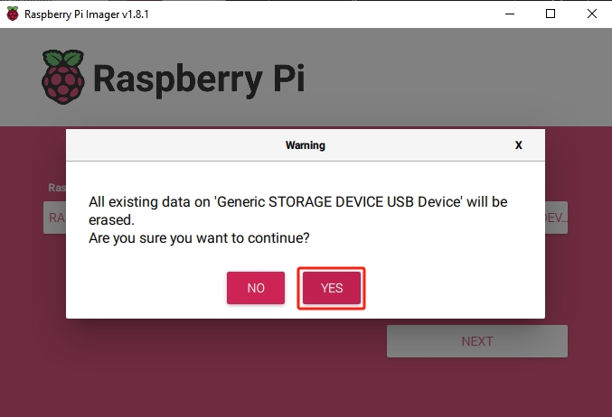

Note
您好，欢迎加入 SunFounder 的 Raspberry Pi、Arduino 和 ESP32 爱好者 Facebook 社区！与志同道合的朋友一起深入探索 Raspberry Pi、Arduino 和 ESP32 的无限可能。
为什么加入？
专家支持：在社区和官方团队的帮助下解决售后问题和技术难题。
学习与分享：交流技巧和教程，提升技能。
独家预览：抢先了解新产品发布和独家预览内容。
专属折扣：享受我们最新产品的专属优惠。
节日促销与抽奖：参与节日特别活动和抽奖。
👉 准备好一起探索与创造了吗？点击 [here] 立即加入！
在 Micro SD 卡上安装操作系统
如果您使用的是 Micro SD 卡，可以按照以下教程将系统安装到 Micro SD 卡中。
所需组件
一台个人电脑
一张 Micro SD 卡和读卡器
操作步骤
使用读卡器将 SD 卡插入您的电脑或笔记本。
在 Raspberry Pi Imager 中，点击 Raspberry Pi Device，然后从下拉列表中选择 Raspberry Pi 5 机型。

选择 操作系统（Operating System），建议选择推荐的操作系统版本。

点击 选择存储设备（Choose Storage），然后选择要安装系统的 SD 卡。
点击 NEXT，然后点击 EDIT SETTINGS 自定义您的操作系统设置。
设置您的 Raspberry Pi 主机名（hostname）。主机名是您的 Pi 在网络中的标识，您可以通过
<hostname>.local或<hostname>.lan访问它。
创建一个 用户名和密码，用于 Raspberry Pi 的管理员账户。因为系统没有默认密码，设置唯一的用户名和密码对于系统安全非常重要。

配置无线网络，输入您的 SSID（网络名称） 和 密码。
Note
请将
Wireless LAN country设置为您所在国家的两位 ISO/IEC alpha2 国家代码。
若您希望远程连接 Raspberry Pi，可在 服务（Services） 标签中启用 SSH。
使用 密码验证 时，采用“常规（General）”标签页中设置的用户名和密码。
若使用 公钥验证，请选择 “仅允许公钥验证（Allow public-key authentication only）”。如果已有 RSA 密钥将自动使用；如果没有，可点击 “Run SSH-keygen” 来生成新密钥对。
选项（Options） 菜单允许您配置写入过程中的行为，如写入完成时播放声音、弹出介质、启用遥测等。

设置完成后，点击 保存（Save） 保存您的自定义设置，然后点击 是（Yes） 应用设置并开始写入镜像。

如果 SD 卡中已有数据，请确保提前备份，以防数据丢失。如无需备份，可直接点击 是（Yes） 继续。
当您看到 “写入成功（Write Successful）” 弹窗时，说明系统镜像已成功写入并通过验证。现在，您可以使用 Micro SD 卡启动 Raspberry Pi 了！

{kind=link}
{kind=link}
{kind=link}